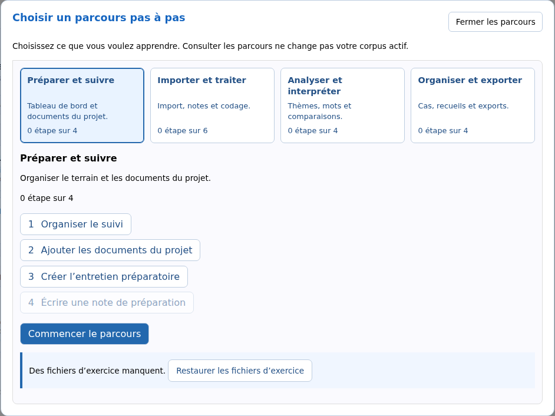

Découvrir et démarrer
Choisir un parcours ou un corpus exemple
Vous pouvez découvrir SonalPi sans utiliser vos propres données. Le logiciel fournit un terrain fictif sur l’aide aux devoirs dans des associations, avec quatre entretiens et leurs enregistrements.
Deux entrées sont proposées dans Découvrir SonalPi, sur l’accueil général :
- Parcours pas à pas : vous voulez être accompagné dans des exercices.
- Explorer les corpus exemples : vous préférez essayer librement les outils.
Commencer un parcours guidé
- Sur l’accueil, cliquez sur Parcours pas à pas.
- Choisissez ce que vous voulez apprendre. La liste des étapes apparaît sous les cartes.
- Cliquez sur Commencer le parcours.
- À la première utilisation, vérifiez l’emplacement de la démo. Utilisez Modifier… pour en choisir un autre, puis cliquez sur Préparer et commencer.
Consulter les cartes et les étapes ne crée pas de corpus d’exercice et ne change pas le corpus courant. La préparation commence seulement lorsque vous la confirmez.
| Parcours | Vous apprenez à… |
|---|---|
| Préparer et suivre | Organiser le suivi, ajouter un document du projet et écrire une note de préparation. La démo commence sans entretien. |
| Importer et traiter | Importer les fichiers d’exercice, prendre des notes, identifier les locuteurs, coder et renseigner une variable. Vous réalisez vous-même les imports. |
| Analyser et interpréter | Explorer des entretiens déjà annotés avec Tri et synthèse, Lexico et les analyses croisées, puis revenir aux passages pour les interpréter. |
| Organiser et exporter | Créer un cas, composer un recueil et exporter des entretiens à partir d’une autre copie du corpus annoté. |
Vous n’avez pas besoin de terminer les premiers parcours pour commencer ceux d’analyse ou d’organisation. Chaque parcours utilise sa propre démo.

Si le catalogue signale que des fichiers d’exercice manquent, Restaurer les fichiers d’exercice remet les fichiers absents à disposition, sans remplacer votre corpus de travail.
Faire une pause et retrouver sa progression
Le guide vous accompagne dans les vrais outils de SonalPi. Une étape est reconnue comme réalisée lorsque le résultat attendu est obtenu, pas simplement lorsque vous cliquez sur un bouton.
- Mettre le guide en pause masque l’accompagnement, sans effacer votre travail.
- Revenir aux parcours permet de consulter les étapes ou de choisir un autre objectif.
- Sortir de la démo, dans le bandeau Démo :, revient à l’accueil général.
Pour reprendre, ouvrez à nouveau Parcours pas à pas et choisissez le même parcours. Le bouton propose Continuer le parcours si des étapes ont déjà été réalisées, ou Commencer le parcours sinon. Le logiciel retrouve votre démo sans effacer le travail en cours. Une simple consultation du catalogue ne relance pas le guide.
Explorer librement un exemple
- Sur l’accueil, cliquez sur Explorer les corpus exemples.
- Choisissez Entretiens déjà importés ou Corpus annoté.
- Cliquez sur Ouvrir ma copie, vérifiez l’emplacement proposé et confirmez avec Ouvrir ma copie.
Entretiens déjà importés contient quatre entretiens transcrits et leurs audios, sans codage thématique initial. C’est le bon choix pour essayer un premier codage.
Corpus annoté contient le même terrain avec des thèmes, des passages déjà codés et des variables. Il s’ouvre dans Tri et synthèse, sans lancer automatiquement une analyse. Vous pouvez commencer à explorer sans importer ni coder auparavant.
Dans les deux cas, vous travaillez sur votre copie modifiable. Aucun guide ne démarre. Pour retrouver vos modifications, revenez à cette entrée et cliquez sur Reprendre mon corpus.
Retrouver ses copies sans les confondre
- Les démos des parcours se retrouvent dans Parcours pas à pas, pas dans les Récents.
- Vos copies d’exploration libre se retrouvent dans Explorer les corpus exemples et dans les Récents.
- Votre travail dans une copie ne modifie pas celui d’un autre parcours ou d’une autre copie.
Les enregistrements d’exercice sont communs aux copies : ne déplacez pas leurs fichiers si vous voulez continuer à les écouter. Si un dossier de travail a été déplacé, Retrouver mon dossier… permet de le désigner à nouveau.
Recommencer une démo
Dans le catalogue du parcours, Recommencer cette démo remet son exercice au départ, après confirmation.
Cette action supprime le travail réalisé dans cette seule démo et sa progression. Pour les parcours d’analyse et d’organisation, le corpus annoté initial est restauré. Vos autres corpus et les autres parcours ne sont pas modifiés.
Pour recommencer une exploration libre sans remplacer votre copie actuelle, ouvrez ses Options, puis choisissez Commencer dans un nouveau corpus….